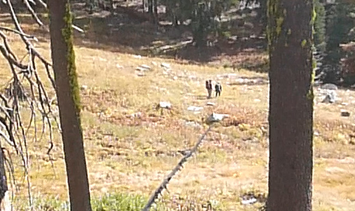
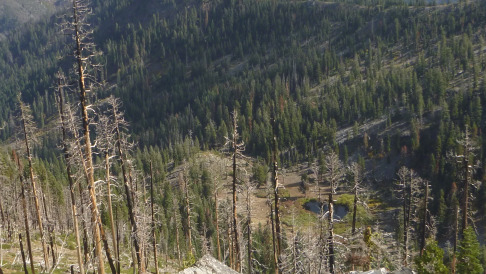
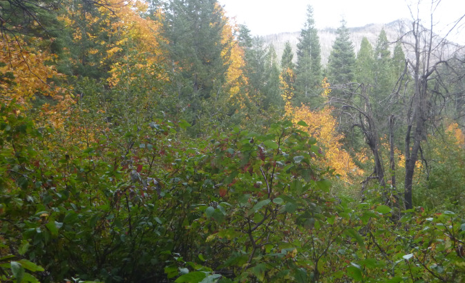

It was day three of a fall backpacking trip deep in the Marble Mountains Wilderness. There were four of us.
We hadn’t seen a trail since day one and after cresting our fourth scree ridden pass, we were begging for an
end to the cross country travel. To get to the trail, we needed to descend the pass into a meadow and continue
down the meadow’s gulch until we found a path that lay perpendicular to our descent. The task seemed easy and
obvious. Micheal steam rolled ahead as if the trail would greet him with a cup of tea. I was caboose, head down,
struggling to keep up. When we reached the meadow, we refused to check the map and continued downward. Fifteen minutes
of hiking later, Micheal checked his Gaia. Gaia is a phone application that uses offline GPS to track your location on
a map. He realized we had passed the trail a fair bit ago. Sean then checked his personal Gaia. I was about 50 yards
behind during this and began to see the boys take a sharp turn uphill out of the gulch. Consequently, I shouted
“what the f**k, where are you going?”. I was not carrying Gaia. Sean and Matt mumbled something back that made
it clear we had missed the trail. I was not so sure about it and thought I had caught a scent on a possible trail
continuing downward. However, the boys eventually left my sight and my hot sh*t trail had evaporated. I realized
I must submit to the grasp of Gaia.
As I sped uphill, I saw the rear of Matt and Sean’s packs heading behind a tree. I snarkily shouted “Can you wait up?”.
They stopped and I asked Sean for the Gaia. He reluctantly showed it to me and my jaw dropped. We had hiked a half mile
past the trail intersection and were now headed straight uphill out of the gulch in an effort to merge with the trail.
The blunder had me frustrated. I wanted to make the smartass remark that we should retrace our steps and find the trail
where we originally should’ve merged. However, Michael was far ahead and not to be seen. So there we went, straight up the
side of the mountain. We thought the cross country was over. Thirty horrid minutes later, we made it to the trail and
I proclaimed, “What a fire route!”.
We caught our breaths then traveled onward toward the Bear Wallowa ridgeline. The trail disappeared after about a hundred
yards. Rather than burying our faces in a cell phone, we took the path of least resistance through the scorched mountainside.
We made it to the ridgeline and not to our surprise, Michael had separated from the pack. To find him we shouted “Mike!”
a few times and received a “woop” in return. We trekked down towards him where the trail miraculously lay.
We were greeted with news that the Phillies had won the NLDS. I prayed to John Muir for forgiveness.
The mountains began to glow gold as we started our downward trek to camp. The trail was clear cut up until we reached a
small meadow, home to an abandoned cowboy camp littered with rope and a fork stuck in a tree. The grass was so perfect
that we took a snack break and threw Michael some soft toss. When we strapped back up, I asked where the trail was and no
one seemed to know or care. The views quickly disappeared and the tall trees darkened the forest. We were now in Bug Gulch.
The beauty here was greater than that seen by the eye. It was embodied by the feeling of remoteness and freedom, side effects
of being days into a backpacking trip that we had yet to see another soul on.
A few miles down the gulch we made camp next to a fire ring that oddly had no clear flat spots around for tents. Soon after,
a bear cub climbed up a nearby tree with no mama bear in sight. The encounter was what one would expect in an eerie gulch like
this. The remainder of the night was spent in close proximity to the campfire. We went to sleep spooked, but never truly scared,
as we knew we had Gaia by our side.


